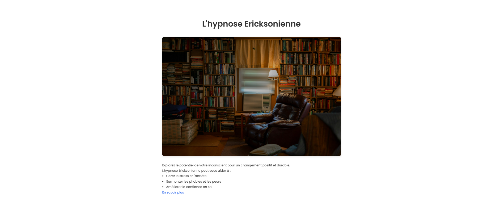
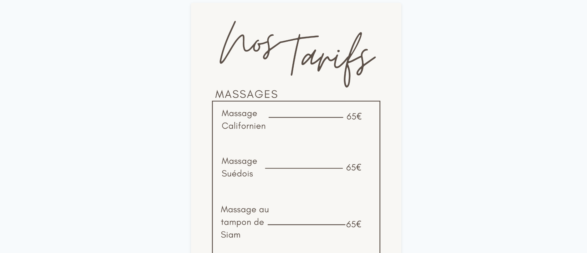
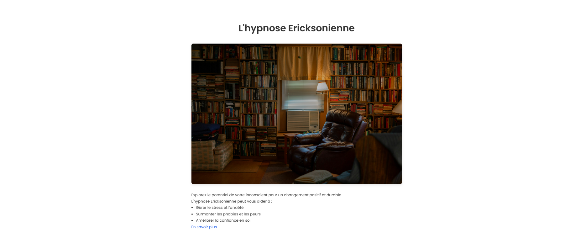
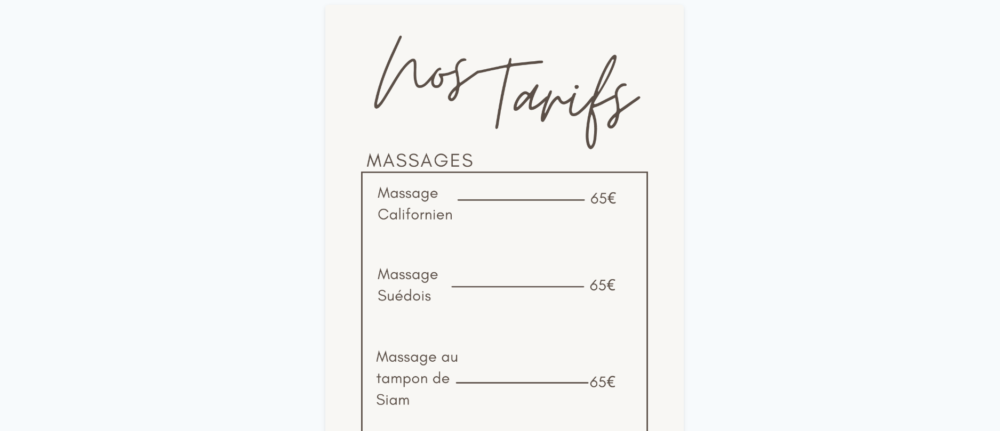

Site Web d'Hypnothérapie et Massages
Description du Projet
Ce projet a une valeur particulière pour moi car il s'agit d'un site web que j'ai réalisé de A à Z pour ma mère, qui exerce en tant qu'hypnothérapeute et masseuse. J'ai voulu créer une vitrine en ligne qui reflète à la fois son professionnalisme et l'ambiance apaisante de son activité.
Fonctionnalités Principales
- Présentation des différentes prestations d'hypnothérapie et de massage
- Galerie photo du cabinet et des techniques
- Système de prise de rendez-vous en ligne
- Témoignages de clients
- Blog avec des articles sur le bien-être et la relaxation
- Formulaire de contact
Ma Contribution
Pour ce projet très personnel, j'ai pris en charge tous les aspects :
- Design UX/UI adapté à la cible et à la thématique bien-être
- Développement front-end responsive
- Optimisation SEO pour améliorer la visibilité locale
- Intégration d'un système de réservation
- Formation à l'utilisation et à la mise à jour du site
Défis et Solutions
Le principal défi était de créer un site qui soit à la fois esthétique, en accord avec l'univers du bien-être, tout en étant parfaitement fonctionnel et facile à utiliser pour les clients comme pour ma mère qui n'est pas très technophile.
J'ai opté pour une interface épurée avec une navigation intuitive, des couleurs apaisantes (tons de bleu, vert et blanc) et des animations subtiles pour créer une expérience utilisateur zen, à l'image des services proposés.
Captures d'écran
 



Une Touche Personnelle
Ce projet a une valeur sentimentale particulière pour moi, car il m'a permis d'allier mes compétences techniques à mon désir d'aider ma mère dans son activité professionnelle. Voir son activité se développer grâce à cette présence en ligne est une grande source de fierté.
Depuis la mise en ligne du site, ma mère a constaté une augmentation significative des prises de rendez-vous, notamment de nouveaux clients qui l'ont découverte sur internet.